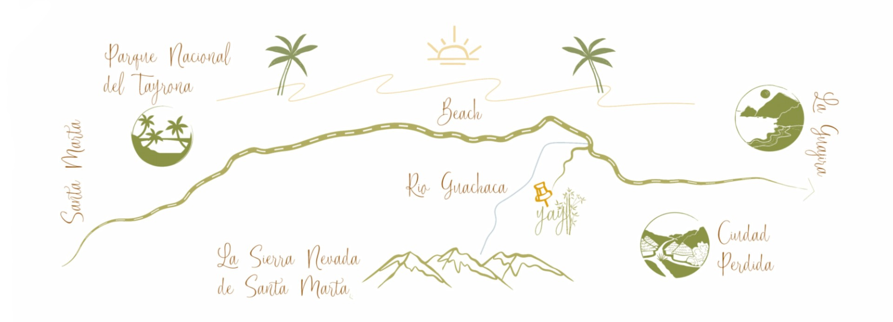

Contacto
Encuéntranos en el corazón de la Sierra Nevada. Estamos aquí para ayudarte en tu viaje sostenible.
Cómo llegar

 YAY Sustainable
YAY Sustainable
Encuéntranos en el corazón de la Sierra Nevada. Estamos aquí para ayudarte en tu viaje sostenible.